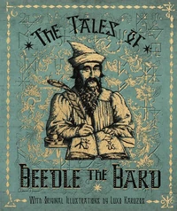

"'The Elder Wand,' he said, and he drew a straight vertical line on the parchment. 'The Resurrection Stone,' he said, and he added a circle on top of the line. 'The Cloak of Invisibility,' he finished, enclosing both line and circle in a triangle, to make the symbol that so intrigued Hermione. 'Together,' he said, 'the Deathly Hallows.'" — Xenophilius Lovegood

The Deathly Hallows were three highly powerful magical objects supposedly created by Death and given to each of three brothers in the Peverell family. They consisted of the Elder Wand, an immensely powerful wand that was considered unbeatable; the Resurrection Stone, a stone which could summon the spirits of the dead, and the Cloak of Invisibility, which, as its name suggests, rendered the user completely invisible. According to the story, both Antioch Peverell (owner of the Wand) and Cadmus Peverell (owner of the Stone) came to bad ends. However, Ignotus Peverell's wisdom in requesting the Cloak was rewarded.
According to legend, he who possessed these three artefacts would become the Master of Death. Dumbledore told Harry that he and another wizard, Gellert Grindelwald took this to mean that the uniter of the Deathly Hallows would be invincible. The story of the Deathly Hallows was originally told by Beedle the Bard and subsequently passed from family to family as a wizard fairytale. Few wizards ever realised that the Deathly Hallows were genuine items. Most people thought that there were things that Beedle had made up to entertain young wizards and witches.
No one but Harry Potter had been known to have been in command of all three at the same time, though he was never in possession of them all at once (he dropped the stone in the Forbidden Forest just before gaining the wand that he had won the alliance of in a previous scuffle at Malfoy Manor). Albus Dumbledore had also possessed all three, but not all at once, much like Harry, as he was never the true owner of the Cloak.
The Tales of Beedle the Bard
"That is a children's tale, told to amuse rather than to instruct. Those of us who understand these matters, however, recognise that the ancient story refers to three objects, or Hallows, which, if united, will make the possessor Master of Death." — Xenophilius Lovegood's overview of the Hallows

In The Tales of Beedle the Bard, the author presented his own version of the origin of the Hallows. Hundreds of years ago, the three Peverell brothers were travelling at twilight, and reached a river too dangerous to cross. The three brothers, being trained in the magical arts, simply waved their wands and created a bridge across the river. They were then stopped by Death himself, who felt cheated that they had gotten across the river, as most travellers drowned in it.
Death, a cunning liar, then pretended to congratulate them on being clever enough to evade him, and offered each of them a powerful magical item. The first brother, Antioch Peverell, wished to have the most powerful wand out of his combative personality; Death broke a branch off a nearby elder tree and created for him the Elder Wand, a wand more powerful than any other in existence. The second brother, Cadmus Peverell, out of arrogance, wanted to humiliate Death even further, and wished to have the power to bring loved ones from the grave; Death then took a stone from the riverbed and created for him the Resurrection Stone, a stone capable of bringing the dead back to the living world. The third brother, Ignotus Peverell, who was a humble man, did not trust Death and asked to go on from the river without being followed by Death; Death then gave him his own Cloak of Invisibility, an invisibility cloak that never lost its power through curses or age. In time, the brothers went their separate ways.
The three legendary objects, (the cloak, the wand and the stone) together made up the Deathly Hallows.